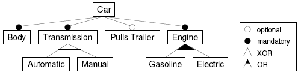
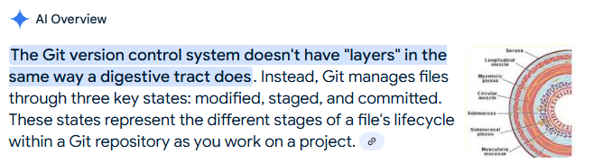

Scrap
Loose notes on feature models, vibe coding and the layers of git.
notes
https://www.jot.fm/issues/issue_2009_07/column5/
Classen et al. [42]: “a triplet, f = (R,W, S), where R represents the requirements the feature satisfies, W the assumptions the feature takes about its environment and S its specification”
The FOSD process comprises four phases: (1) domain analysis, (2) domain design and specification, (3) domain implementation, and (4) product configuration and generation.

https://pocketflow.substack.com/p/ai-codebase-knowledge-builder-full
https://github.com/The-Pocket/PocketFlow-Tutorial-Codebase-Knowledge
https://github.com/The-Pocket/PocketFlow-Tutorial-Codebase-Knowledge/blob/main/nodes.py
IdentifyAbstractions: The Pattern Finder AnalyzeRelationships: The Connection Mapper
What you actually need is:
The big-picture blueprint (what are the key pieces?)
The master plan (why was it built this way?)
The relationship map (how do these pieces talk to each other?)
Our approach mirrors how your brain naturally learns—and it's dead simple:
The Eagle's View - First, we zoom out and see the entire forest: What's this code trying to do? What are the key pieces? How do they fit together? This mental map is your secret weapon against code confusion.
The Deep Dive - Then we swoop in on each important piece: How does it work? What clever tricks does it use? Why was it built this way? We explore thoroughly but always keep its place in your mental map crystal clear.
---
---
Vibe coding is what we have been doing - long before LLM's brought us the power to automate our personal workflows. Our workflows have been vibes, feelings and gut checks.
Features are often hierarchical-but extremely hard to think about in this fashion imo.
Consider the layers of git

https://graphite.dev/blog/understanding-git
git push is a downstream feature that relies on many other processes
Even defining a "feature" in other means is hard: how often do you see people adopting https://www.conventionalcommits.org/en/v1.0.0/#specification ?
The "killer" abstraction imo would be a system that turns a Git-Tree into a hierarchical feature flag menu - so any project could "enable" or "disable" the applications of commits like patches of behavior.
Also, can you guess how big a feature is from a statement like feat: add ability for user to upload photo for profile ?
https://gist.github.com/levibostian/71afa00ddc69688afebb215faab48fd7
voice:
So the main question is why does any of this matter and the short end of that is large language models have I think taught us an important thing about the recent past history of software design which is mainly that we don't know what we're doing. byte coding is not just a new trend it's been the de facto way that software has been built in most places for quite a lot of time. Now there are plenty of research and consideration into how software ought to be built and I'm not gonna go into most of those, however domain driven design and event driven architectures are the ones that speak to me the most.